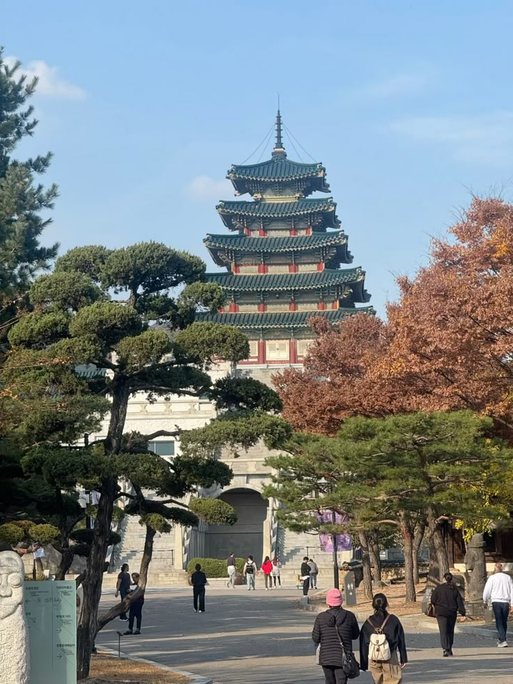
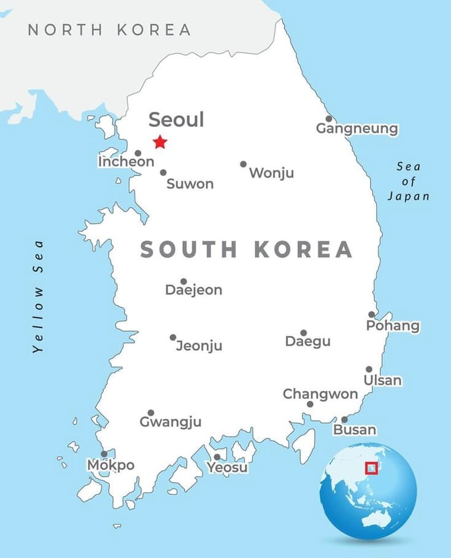

Sejarah

Sejarah Korea Selatan dimulai setelah penjajahan Jepang berakhir pada tahun 1945.Setelah itu Semenanjung Korea dibagi menjadi dua pada garis 38 derajat lintang utara.
Wilayah selatan berda dibawah pengawasan Amerika Serikat dan kemudian mendirikan negra Republik
Korea pada tanggal 15 Agustus 1948 dengan presiden pertamanya syngman Rhee.
Pada tahun 1950,Korea utara menyerang Korea Selatann dan terjadilah Perang Korea hingga tahun 1953.Perang ini menyebabkan kerusakan yang sangat besar.Setelah perang,pemerintah
Korea Selatan masih belum stabil dan sering terjadi kudeta militer.
Memasuki tahun 1960-an hingga 1980-an,dibawah pemerintahan Park Chung-hee,Korea Selatan mulai fokus membangun industri dan ekonomi.Masa ini membuat ekonominya tumbuh sangat cepat
dan dikenal dengan sebutan Keajaiban Sungai Han.Pada tahun 1987 Korea Selatan berhasil menjadi negara demokrasi.Sejak saat itu,Korea Selatan berkembang menjadi negara maju yang kuat dibidang
teknologi,ekonomi,dan budaya populer seperti K-pop dan K-drama yang terkenal seluruh dunia.
Geografis

Korea Selatan terletak di Asia Timur,di bagian selatan Semenanjung Korea.Luasnya sekitar 100.210 km persegi.Wilayahnya 70% pegunungan, sisanya
daratan rendah di barat dan selatan.Negara ini berbatasan dengan Korea Utara di utara,Laut kuning di barat,dan
Laut timur di Timur.Iklimnya memiliki 4musim,nyaitu semi,panas,gugur,dan dingin.
Wisata
Dulu Korea selatan bukan negara wisata karena masih miskin setelah perang.Wisatanya mulai ramai ssejak tahun 2000-an karena pengaruh Hanllyu atau Korean Wave
seperti drama korea dan k-pop yang mendunia.Karena banyak orang penasaran dengan tempat syuting dan budaya Korea,pemerintah lalu memperbaiki tempat Wisata
dan gencar promosi.Jadi wisata Korea terkenal bukan tiba-tiba,taoi karena budaya popnya yang membuat orang ingin datang.
Namsan Tower

Namsan Tower atau N Seoul Tower adalah menara terkenal yang terletak di atas Gunung Namsan,Seoul.Menara dengan tingggi 237 meter ini menjadi tempat terbaik untuk melihat
pemandangan seluruh kota Seoul dari ketinggian,terutama pada malam hari ketika lampu-lampu kota menyala dan menara menampilkan cahaya warna-warni yang indah.Selain itu,
Namsan Tower juga terkenal dengan gembok cinta,dimana banyak pasangan memasang gembok dipagar sebagai simbol cinta abadi.Didalam menara juga terdapat restoran,toko souvernir
dan berbagai fasilitas lainnya,sehingga tempat ini selalu ramai dikunjungi wisatawan karena suasananya yang romantis dan pemandangannya yang menakjubkan.
Pulau Jeju

Pulau Jeju menjadi tempat wisata terkenal karena memiliki alam yang sangat indah dan lengkap.Di pulau ini terdapat Gunung Hallsan sebgai Gunung tertinggi di Korea Selatan,
pantai-pantai yang bersih seperti Pantai Jungmun,air terjun yang indah,seta Gua lava Manjanggul yang ditetapkan sebagai warisaan dunia UNESCO.Selsin itu,letak pulau Jeju
yang berada di ujung selatan Korea membuatnya memiliki iklim yang hangat dan sejuk sehingga cocok untuk berlibur.Pulau ini juga dikenal sebagai Pulau Cinta karena suasananya
yang romantis dan sering menjadi lokasi syuting drama korea.Dengan budaya yang unik seperti patung Dol Hareubang dan tradisi penyelam wanita Haenyeon,Jeju dijuluki sebagai
Hawai-nya Korea dan menjadi destinasi wisata wajib di Korea Selatan.
Sungai Han

Sungai Han atau Hangang adalah sungai paling terkenal dan paling penting di Korea Selatan.Sungai ini membelah Kota seoul menjadi dua bagian yaitu Seoul Selatan (Gangnam) dan
Seoul Utara (Gangbuk).Panjangnya sekitar 514 km.
Dulu sungainya kotor,tapi sekarng sudah bersih dan jadi tempat Favorit warga untuk bersantai.Disepanjang Sungai Han ada banyak taman yang disebut Hangang Park,seperti Taman
Yeouido,Banpo,dan Ttukseom.Disana orang biasanya piknik,naik sepedah,dan makan ramyeon sambil melihat pemandangan sungai.Pada malam hari ada pertunjukan air mancur pelangi
di Jembatan Banpo yang sangat indah.Sungai Han juga seering muncul di drama Korea,jadi banyak wisatawan yang datang untuk menikmati suasana seperti di drama.